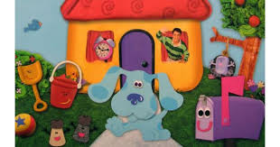

About Blue's Clues
Blue's Clues is a show for preschoolers that first aired in 1996 with Steve Burns as Blue's caretaker.

In 2002 Steve Burns left and Donovan Patton "Joe" took over until the show ended in 2006
In 2019 the show was rebooted as Blue's Clues and You with Joshua Dela Cruz playing the part of Blue's caretaker. A lot of the episodes are redo's of the originals which makes a lot of parents happy. Kids that grew up with the original show are now watching it with their own kids.
Host
- Blue and Steve
- Blue and Joe
- Blue and Josh